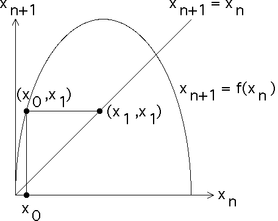

|  |
| To continue, we should locate x1 on the |
| However, there is an easier way. |
| From the point |
| All points on a horizontal line have the same y-coordinate, x1 for this line. |
| Consequently, the point of interesction of this line and the graph of
|
| But all
points on the line |
| Note a vertical line through this point also passes through the point x1 on the
|
| Click the picture to see the next step. |
Return to Graphical Iteration